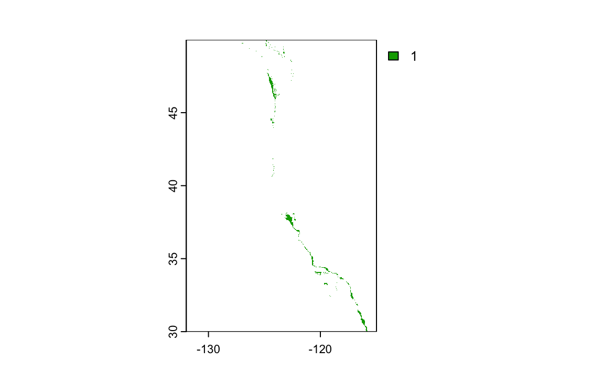
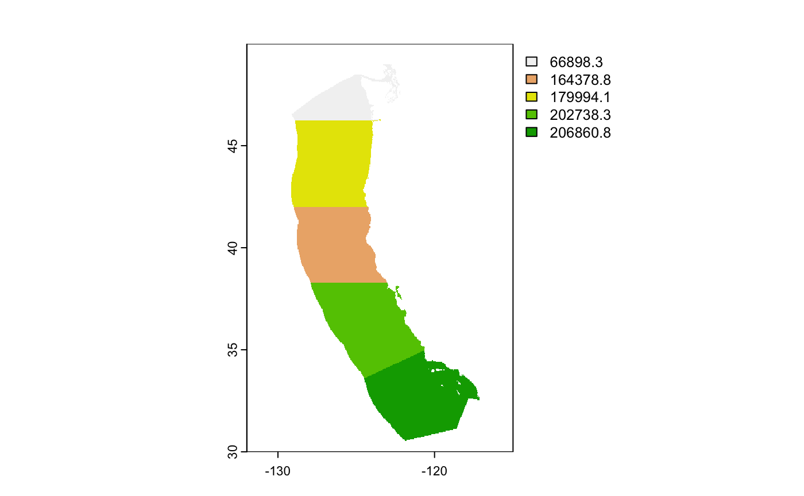
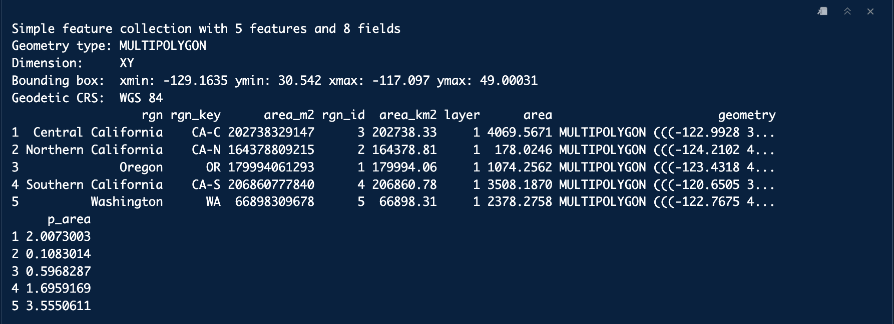
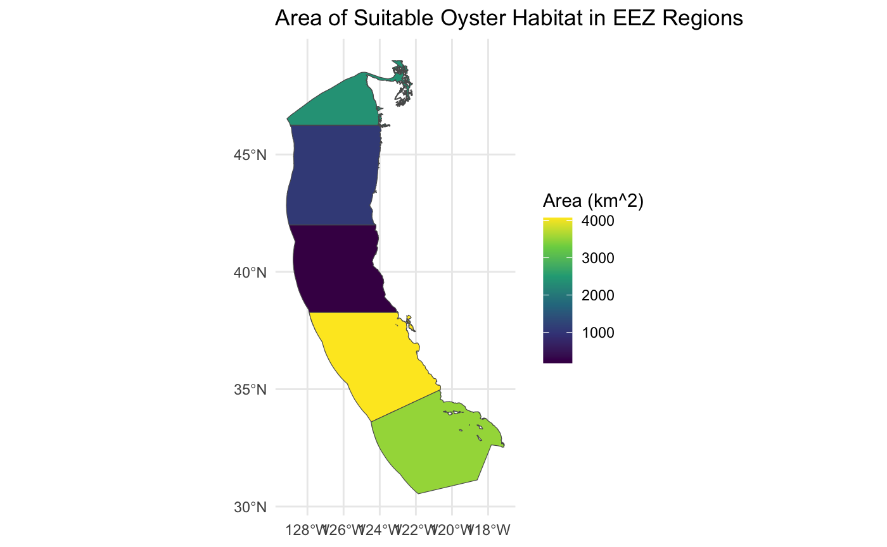
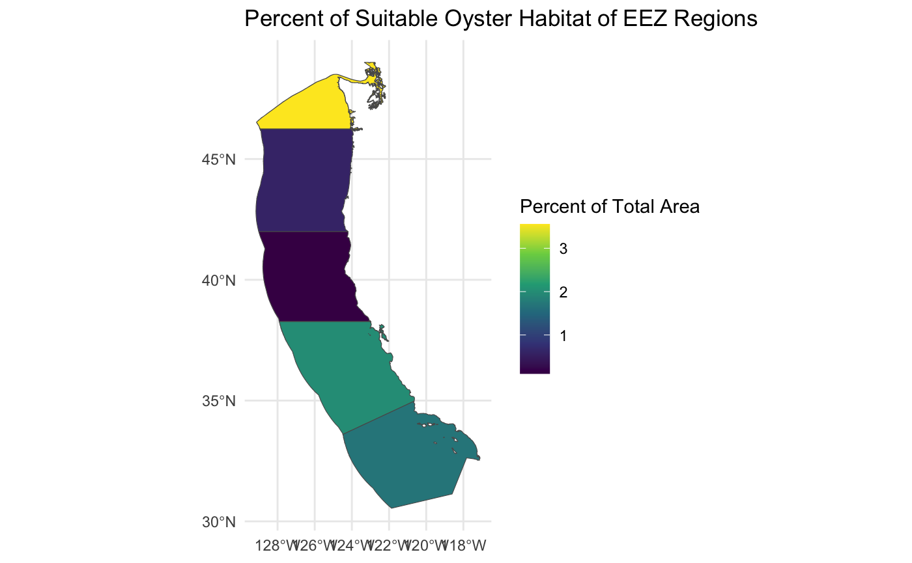

Code
# load packages
library(sf)
library(terra)
library(here)
library(dplyr)
library(tmap)
library(tidyverse)
library(stringr)
library(ggplot2)
library(raster)December 1, 2023
Author: Fletcher McConnell
First, I loaded all of the packages needed for this analysis:
First, I was interested in what portions of Califonia’s coastline would be suitable for Oysters. They have an ideal depth range of 0 to 70 meters and ideal temperature range of 11 to 30 degrees Celsius. In order to find where these parameters are met, I used data of annual sea surface temperatures from 2008 to 2012 and then also used bathymetry data of the ocean. These first series of steps involve me doing a bit of data wrangling and making sure that I would be able to stack my depth raster with my temperature raster. I had previously combined all 4 years of temperature data into a raster stack ‘all_sst’.
# find mean SST
all_sst_mean <- mean(all_sst)
# convert SST data to Celsius
all_sst_mean <- all_sst_mean - 273.15
# crop depth to match SST raster
depth <- crop(depth, all_sst_mean)
# resample depth data to match SST resolution
depth <- resample(x = depth, y = all_sst_mean, method = "near")
# check that that depth and SST match in resolution, extent and crs (by stacking them)
depth_sst <- c(depth, all_sst_mean)After I had my depth and temperature rasters combined, I then needed to filter these rasters to the values that I wanted. As I mentioned above, Oysters like temperature between 11 and 33 degrees Celsius and do best in depths from 0 to 70 meters. After assigning these parameter values, I plotted areas along the coast that meet both of these criteria. The following is what I came up with:
# set range for habitable oyster depth
depth_matrix <- matrix(c(-70, 0, 1,
-Inf, -70, NA, 0, Inf, NA),
byrow = TRUE, ncol = 3)
depth_sst <- classify(depth, depth_matrix)
# set habitable range for oyster temperature
temp_matrix <- matrix(c(11, 30, 1,
-Inf, 11, NA, 30, Inf, NA),
byrow = TRUE, ncol = 3)
temp_sst <- classify(all_sst_mean, temp_matrix)
ocean <- stack(x = c(depth_sst, temp_sst))
# find habitat that satisfies both temp range and depth range
function_1 <- function(x, y){
ifelse(x ==1 & y == 1, 1, NA)
}
suitable_habitat <- lapp(rast(ocean), fun = function_1)
The above plot shows the California coastline. In this plot, I have set values within temperature and depth parameters equal to “1” and combined both rasters. The colored regions represent areas that are within both of the specified depth and temperature regions.
Now that I had the area designated for suitable habitat for oysters, I wanted to explore which of the 5 EEZ regions along the west coast contained the most potential for oyster fishing. In order to do this, I needed to find the total suitable area within each EEZ region. Below is a plot showing each of the 5 regions and their corresponding total areas. The regions from North to South are Washington, Oregon, Northern California, Central California and Southern California.

As you can see, by comparing the plot above with plot showing suitable habitat, all of the EEZ regions contain at least some suitable oyster habitat. Now, I wanted to find out just how much suitable area there was in each region. This way, I would be able to rank each region in terms of potential for oyster farming. This next code section accomplishes exactly that.
# convert eez data into raster format
wc_eez_raster <- rasterize(wc_eez, depth, field = "rgn")
# find area of suitable habitat within each eez
area <- expanse(suitable_habitat, unit = "km", zones = wc_eez_raster)
# join calculate percent of suitable habitat and join back with eez data
total_suitable_area <- merge(wc_eez, area,
by.x = "rgn",
by.y = "zone",
all.x = TRUE) |>
mutate(p_area = (area/area_km2) * 100)
total_suitable_area
The above is an output after I joined the amount of suitable area (“area”) and percent of total area (“p_area”) to the original EEZ data frame. This is the output that I was looking for. The step left was to visualize the results in order to gain a clearer picture. This first plot represents the total suitable area of each region.

As you can see, Central California had the most suitable area and Northern California had the least. Now, I will compare this with the percentage of suitable area within each region.

This plot gives a bit of a different perspective, because it takes into account the size of each region. Washington ranks first with with the percent of area because it has a comparably smaller total area than the rest of the regions. Oregon and Northern California are the only two regions whose ranking remains unchanged in this second plot, ranking second lowest and lowest, respectively.
@online{mcconnell2023,
author = {McConnell, Fletcher},
title = {Determining {Suitable} {Habitat} for {Oysters} Within {EEZ}
Regions of {California}},
date = {2023-12-01},
url = {https://fletcher-m.github.io/blog/2023-12-01-eds223-final-project/},
langid = {en}
}